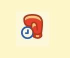

Spiral Arm produce web-based products for clients requiring bespoke solutions. We build applications that provide lasting benefit to the organisations we work with.
We offer project-based software development, using our preferred technologies to deliver modern cloud-hosted products and services that have great performance and reliability.
Examples of our Work
Customers say "Spiral Arm's professionalism and delivery oriented approach put them head and shoulders above other software houses", and are "very pleased with the professional approach Spiral Arm took". One senior research manager described an automation tool we delivered simply: "It's changed my life".
Taykt.com - Scala and Lift based SMS promotion tool.

Three Twitter integration apps, using Scala and Lift.
CMS, web site, and iPhone site for TRP using Scala and Lift, with Flash.
MMS web product for regional newspaper group.
JVM-based 3D visualization tool.
What we do
We help organisations focus on the problem to be solved, design a solution, and deliver a result with lasting value.
Focus
What's the problem being solved? Who is it helping? What aspects should be focussed on to deliver the most beneft in the least amount of time? These are aspects of a project we want to understand before proposing a solution.
Design
We've gained a great deal of experience in, and trust of, the JVM ecosystem. We develop using Scala, our preferred web framework is Lift, and we deploy to the cloud using Amazon EC2 & CloudBees:
Scala is a concise, elegant, productive programming language which retains full interoperability with the mature Java platform. It is backed by Typesafe.
Lift is the most powerful, most secure web framework available today. It's used by the likes of FourSquare, The Guardian and Novell.
Cloud hosting allows us to deploy applications quickly, reliably and at scale.
Deliver
We always have a hands-on role in developing systems. Our development style is agile. We like to complete a feature and release it: there’s no better test of software than for it to be running with real users. This also gives us, collectively, the opportunity to make course adjustments to the project at all levels. And of course, this style gives you a return on your investment quickly.
With regard to software development, we do the right thing: we have issue management, source control, automated builds, unit testing, automated static analysis, code reviews and code coverage reports.
Collaborate
We have a track record of successfully working with others to bring in specialised skills where required, and managing the over-all process. This is always transparent with open and honest communication. We don't outsource our responsibilities, and prefer to introduce you to great individuals and companies who may be able to work with you on future projects.
Community
We get a buzz out of contributing to the Scala and Lift community, and by airing our learning we in turn benefit from the feedback of others.
Software
Lift Modules:
Google Analytics - many projects need this, so it makes sense to provide it as a module.
IMAP IDLE - allows Lift apps to receive push email.
Hudson/Jenkins S3 Plugin - to automatically and reliably publish projects to Amazon S3.
Spiral Arm was founded in 2003 by Richard Dallaway and Jonathan Ferguson to build applications for the web and mobile devices. We're a software
production company: we build and cloud-host products, and bring teams together to work on complete solutions for clients.
Our background is in building server-side applications for publishing, financial,
travel, automotive and IT consulting industries. The senior staff worked together at a UK publisher, and joined forces to produce
complete end-to-end systems for clients: mobile and desktop applications that work with web sites, databases
and web services.
You can find us at The Skiff, 6 Gloucester Street, Brighton, BN1 4EW.
The company is registered with Companies House in England and Wales as company number 4899633 and is based in Brighton (approximately 50 minutes from central London).